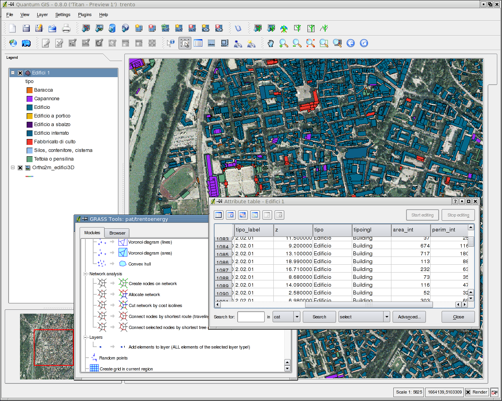
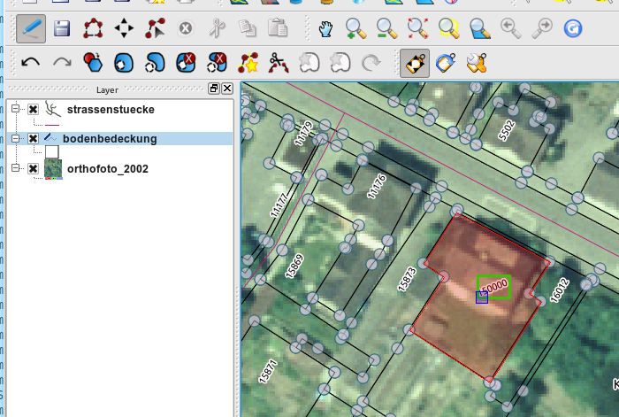
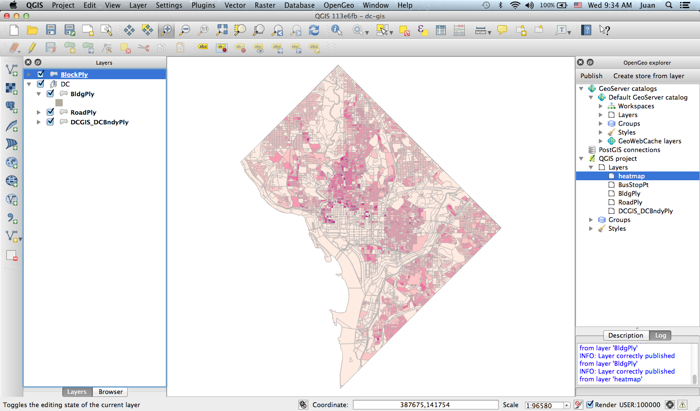
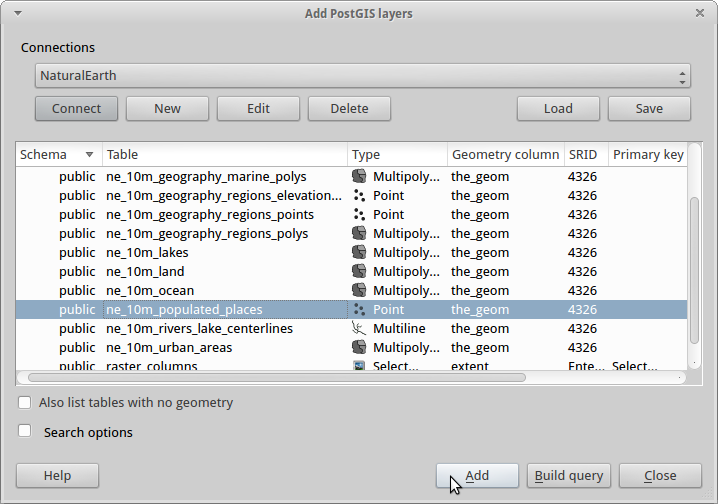
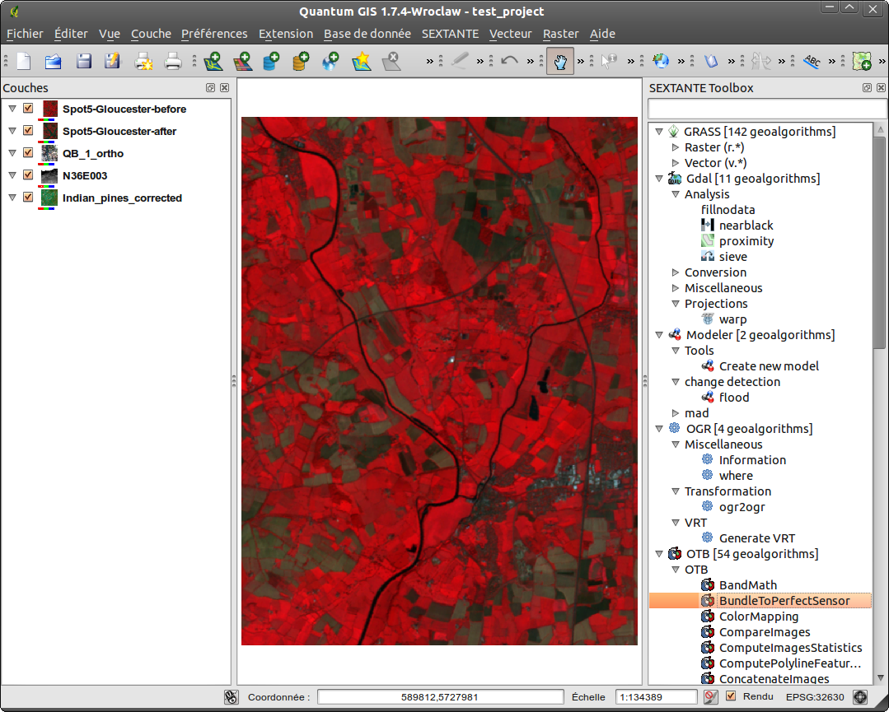
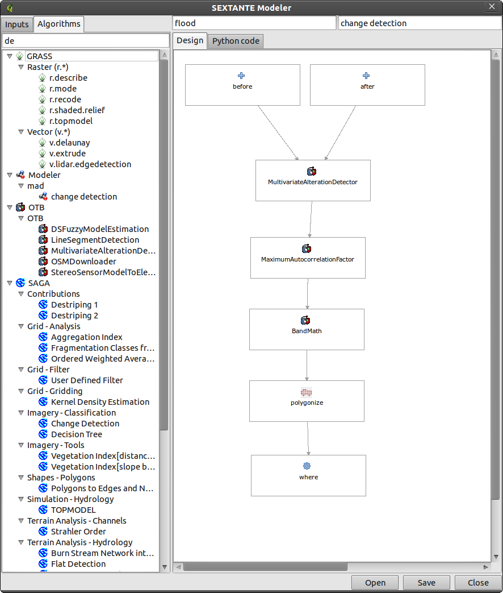
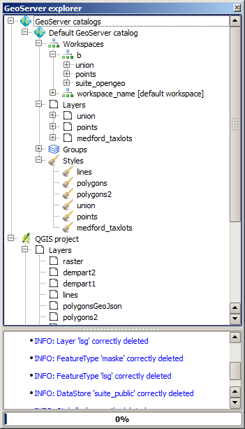

Juan Marin
- Open Source geospatial developer
- CTO @ OpenGeo
- Twitter: @jmarinotero
What is QGIS?
Q: So what can I do with it?
A: Pretty much everything you have been doing so far with your expensive proprietary software
Editing
Mapping
Data Management
Analysis
|  |  |
Publish
OpenGeo Suite QGIS plugin
- Works with QGIS 2.0
- Integrates with:
- GeoServer
- GeoWebcache
- PostGIS
- Completely free and open source
- Available at http://qgis.opengeo.org/